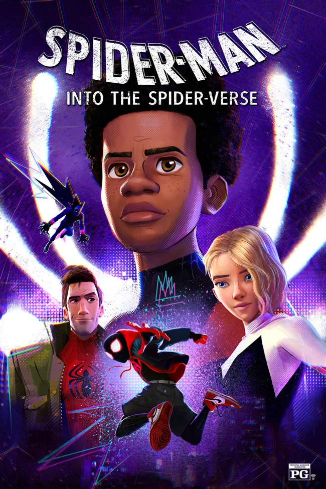
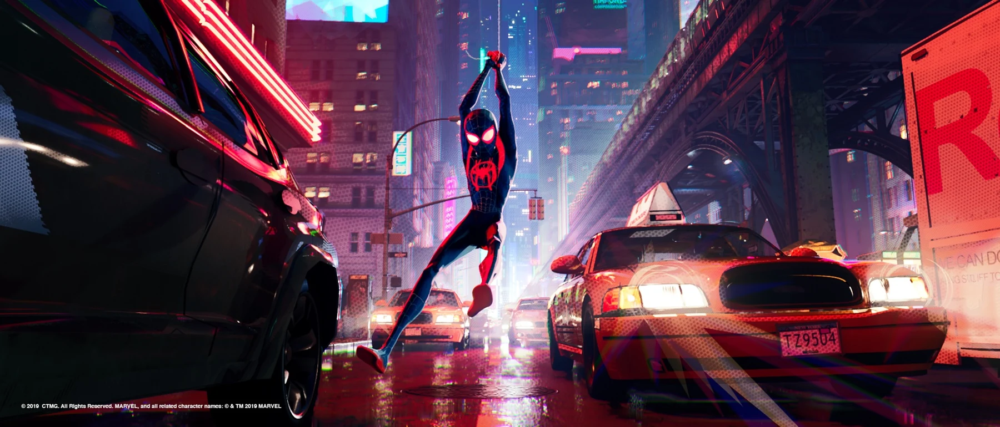

Spider-Man: Into the Spider-Verse
Follow Miles through his first days with the mask. His sketchbook, a Brooklyn mural and a leap between skyscrapers tell you who he is.

Film spotlight
2018 Animation 117 min
One Brooklyn kid. A handful of borrowed masks. Miles Morales gets his own origin story in a city drawn like a living comic book.
Explore filmThe field guide

Follow Miles through his first days with the mask. His sketchbook, a Brooklyn mural and a leap between skyscrapers tell you who he is.